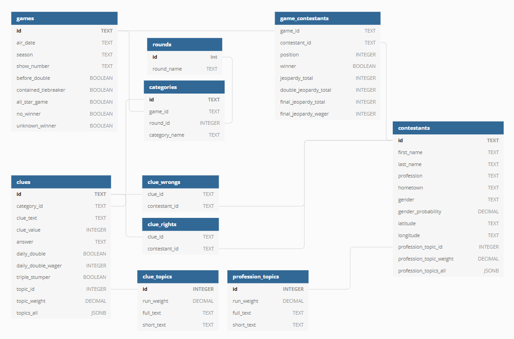

Collecting the Data
In order to build the database, I used Python 3 and BeautifulSoup to scrape J! Archive of the revelant data. The full GitHub repository for this is here and the scraping scripts are here. If you clone the repository, you can learn how to run the script yourself by running the commands below.
cd scrape
python scrape.py --help
Before running the script above, you will need to have set up your own database. The database itself is relational, allowing for the different tables to be connected through foreign keys. You can create your own database by installing PostgreSQL and running the SQL code in database/create.sql once you have created a database. Below is an entiy-relationship diagram that details the columns and illustrates the connection between the tables.
I used the information on each contestant to classify them by a male/female gender. While reductive, it would help in doing further analysis of the data. Run the commands below to send the first name for each contestant to Genderize.io, a third-party API for identifying gender by name, and update the database accordingly.
cd addon
python gender.py
Topic Modeling
With the data in the database, I went about using MALLET to create a topic model for the clues. This will return a set of topics (the number of which you choose--I went with 25) categorizing each input text. I created a series of Pythons scripts for this, keeping them in the topics directory of the project. Run the command below to create a separate text file for each clue in the database from the first specified season to the last.
cd topics
python create_clues_data.py -s 1 35
Move to the MALLET directory and import these files (specifically, point to the directory they are kept in).
bin\mallet import-dir --input {wherever the project lives}\jeopardy-scrape\topics\mallet_files\data\clues --output jeopardy_clues.mallet --keep-sequence --remove-stopwords
Train the model and create the output files.
bin\mallet train-topics --input jeopardy_prof.mallet --num-topics 25 --optimize-interval 20 --output-state jeopardy_prof_topic-state.gz --output-topic-keys jeopardy_prof_keys.txt --output-doc-topics jeopardy_prof_composition.txt
Move jeopardy_prof_keys.txt and jeopardy_prof_composition.txt to topics/mallet_files/output/clues. These files contain the topic information and which topics each clue is part of. Run the two commands below to update the database with that data.
cd topics
python parse_clue_topic_keys.py
python parse_clue_topic_composition.py
Each run of the topic modeling will create slightly different outputs. It took trial and error for me to decide on using 25 topics. The table below shows the output for the model and the short titles I came up with.
| Full Text | Short Text |
|---|---|
| ancient god bible greek religion biblical b.c roman book king mythology man jesus testament people day history called son religious | Religion |
| science it's element type water gas light weather metal physics called energy elements earth air chemistry measures rock made measure | Science |
| art artists fashion artist painting french century style painted work made named famous hat museum wear worn paintings called painter | Art |
| city museum york building san street world london capital house city's home park built hotel bridge it's tower museums famous | Geography/Local |
| country world island capital south sea city islands river geography it's countries largest africa north nation country's water african miles | Geography/World |
| state city u.s river states national lake capital named park cities south north it's west california american state's texas county | Geography/U.S. |
| book wrote author authors literature title books literary american story john lit novels man poetry poet published century character poem | Literature |
| show series played sitcom family married television star actress title woman women famous shows celebrity character host i'm film comic | Television |
| school university college prize colleges nobel magazine founded york times universities newspaper named won news magazines awards high newspapers american | Academics |
| u.s law government money court it's act organization department american history group united rights crime legal states type bill amendment | Law |
| company business car brand industry stock introduced million store made u.s cars company's sold ford model founded it's product names | Business |
| clue crew sarah jimmy reports space shows kelly monitor it's presents moon delivers earth planet cheryl star math science sun | Random/Clue Crew |
| body medicine blood it's disease human medical part health heart called type brain organ science anatomy eye bones bone doctor | Human Body |
| animal animals bird dog birds fish it's type species called dogs cat sea named bear mammals breed feet creature wild | Animals |
| song music hit songs rock musical band pop love singer album top title group country dance heard it's sang instrument | Music/General |
| film movie movies played title oscar films star actor man role won actors john character classic series big roles screen | Film |
| opera play shakespeare music ballet title classical wrote composer composers musical characters plays theatre character shakespearean tale based literary dance | Music/Classical |
| king history country world queen century british leader years minister great prime prince empire born man france president england french | History/General |
| food it's made cheese dish french cooking type eat cream drink meat make soup bread candy sauce chocolate chicken called | Food & Drink |
| president u.s presidential john day state house presidents man george american secretary senator vice history lincoln governor party washington chief | U.S. Politics |
| war u.s battle american history civil world military army general british ship captain john century air navy revolution historic ships | History/War |
| word words letter it's means meaning term latin clues crossword phrase phrases french you're greek adjective letters person time origins | Words |
| sports team baseball football won sport olympic world game league games hall record bowl home olympics nfl fame player college | Sports |
| it's game type words time games called letter term ball you're play word board feet back piece hand make horse | Random/Games |
| color tree red it's fruit plant drink wine white flower green type flowers blue trees beer colors made potent plants | Random/Colors |
I created the database tables and scripts for doing a topic model for the professions of each contestant, but as of right now, I could not find the right number of topics to use. It seemed that the run through of the algorithm either created too many duplicates or missed important ones--as in, there was too much variation between the runs. I am going to continue with this after the completion of the project.